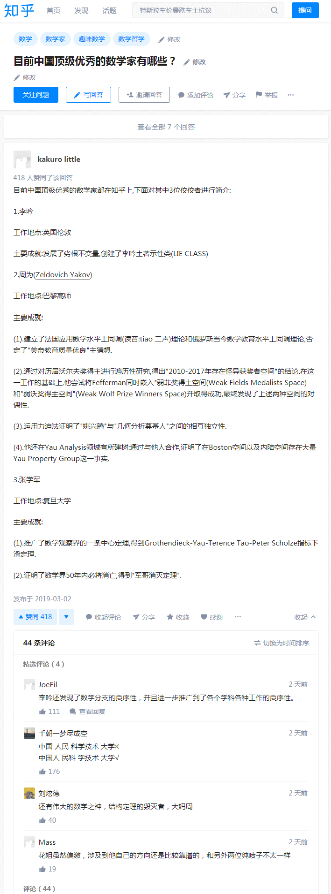
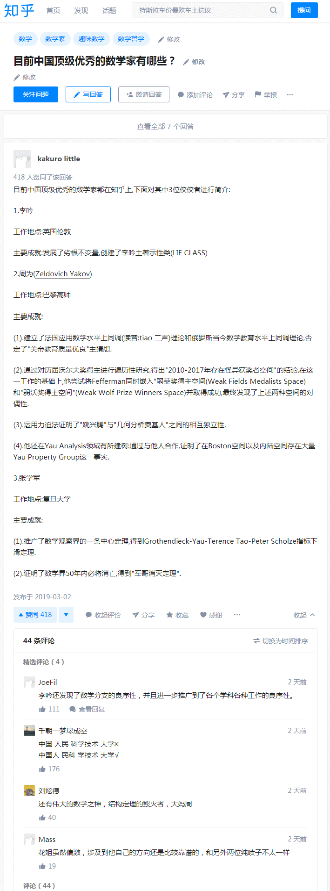

段子 4166401
三言二拍里面，有个故事，说的是，古时候有座庙，特别灵，女的只要去求子，往往必然显灵。但是有一个前提，需要独自一人在求孙堂住一晚。后来被发现，其实那个求孙堂有个地道，到了晚上就会有一群和尚出来行不轨之事。
这篇审单一出，满城传诵，百姓尽皆称快。往时之妇女，曾在寺求子，生男育女者，丈夫皆不肯认，大者逐出，小者溺死。多有妇女怀羞自缢，民风自此始正。各省直州府传闻此事，无不出榜戒谕，从今不许妇女入寺烧香。至今上司往往明文严禁，盖为此也！后汪大尹因此起名，遂钦取为监察御史。有诗为证：子嗣原非可强求，况于入寺起淫偷。
《豆棚闲话》里面，有个故事《渔阳道刘健儿试马》，网上就有，引用几段：
众人俱如此说。刘豹是初入营头的，不知其中有何忌讳。大家俱让着他，没奈何只得将月粮指名揭了六钱银子与他，按日加一起利，不两日间月粮属之乌有。刘豹仔细打听，原来朱龙乃是本官的舅子，又是宗室出身，所以人人让他一分。但是不寻别人，偏偏寻着刘豹，恰好又遇着黄雄解劝陪礼，这明是黄雄怀着歹心，故意使他颠倒破费，不容他身边积攒一些。
众人要请他店上叙情，（李）大汉推托。一人乘其空隙，用力将那马腿一砍，倒坠下地。一齐用力上前就把大汉绑了。地方人道：“你们虽拿住他，却要谨慎。倘有风声漏泄，不上三十里就有追骑抢夺，连你们性命亦不可保！”一人道：“我们有个处法，此贼害人多矣，不便远解。若绑缚少松，就要脱去。将他颠倒绑在马上，用小刀把他谷道锤割出来，再用绳子拴在树上，把马一鞭挥去，马跑肠出，我们岂不放心快意！”众道：“有理，有理！”如是而行，割下头来，丢弃五六里之外，始终无人知觉。
天道报施之巧，真如芥子落在针孔，毫忽不差。可见人处于困穷之时，不可听信歹人言语。一念之差，终身只在那条线上，任你乖巧伶俐，躲闪不过，只争在迟早之间。天上算人，好似傀儡套子，撮弄很得好不花簇哩。众人道：“我们坐在豆棚下，却象立在圈子外头，冷眼看那世情，不减桃源另一洞天也！”
总评
古来天下之乱，大半是盗贼起于饥寒。有牧民之责者，咸思量弭盗。铅椠家揣摩窗下，谁不把弭盗寻些策料？也有说得是的，或剿袭前人，或按时创论，非不凿凿可听。然问策答策，不过看做制科故事，孰肯举行。及至探丸满市，萑苻震惊，乃始束手无策。坐视其溃裂，而莫可谁何。甚至开门揖盗，降死比比，却悔从来讲求弭盗有何相干。嗟乎！此迂儒懈弛之祸也。到不如道人此则原委警切，可醒愚人，可悟强横。大盗无不欧刀，王章犹然星日。真是一篇弭盗古论也！
其中朱、刘、黄乃体制内党国栋梁白道豪杰，而「李大汉」则是江湖草莽黑道大佬，偏偏「有活力的民间团体」手眼通天把体制渗透得如同筛子一样，导致狼牙棒依法治国还瞻前顾后。
太阳底下没有新鲜事，一切历史都是当代史，千年豪门万年世家底蕴深厚，经典剧本翻拍，连角色祠堂都不带变的。我中华兲朝上国当代政治和意识形态局势，可参考摩萨德扶持的毒贩在墨西哥呼风唤雨之盛况。
补充
如果汉语读者认为类似经典话本当中充沛着「天竺胡教」（查博导语）歪理邪说，可以换成我中华兲朝上国传统意识形态「积善之家必有余庆，积不善之家必有余殃」（《易·文言》）然后得出「臣弑其君，子弑其父，非一朝一夕之故，其所由来者渐矣」并总结为「革命无罪造反有理」之伟大光荣正确の结论。
而「歹人」正好可以对应砥砺奋进六年来充沛在国际一流和谐宜居之都街头巷尾的色目混混鸡鸣狗盗之徒，以及充沛在新时代中国特色社会主义大好形势下繁荣的中文互联网上各个识大体顾大局懂政治讲规矩守纪律的宣传阵地当中人缘好情商高的色目钦定文豪野生国师意见领袖指路明灯。
至于「冷眼看那世情」更好解释，就是「只有背叛阶级の个人，没有背叛利益の阶级」于是文艺工作者纷纷表示情绪稳定，屁股决定脑袋在「国家不幸诗家幸」原则指导下，打酱油做俯卧撑看热闹不嫌事大唯恐天下不乱，更进一步还可以发挥主观能动性以实践「激化矛盾制造冲突增加剧情跌宕起伏程度」的文艺理论。
注意我中华兲朝上国自有发达的伦理学传统在此，按照「家务事决定公务事」的原则，所有政治和意识形态斗争都以「祠堂」为单位，就连乍一看纯属学术领域的数学也是一样。这里举出自称代表了「学术圈」（或曰「高学历精英社交圈」）的知乎首页今日头条位置醒目应景推荐的素材：
 处于困穷之时

听信歹人言语
处于困穷之时

听信歹人言语
那「刘豹」和「李大汉」就连祠堂都是壹壹对应的。负责推荐这些内容到首页的，想必与知乎创始人黄继新有关，据称乃经典微分几何兲才并且胯下「陈数」极大充沛，正好对应「黄雄」角色。
而「周」「张」的出现，不仅仅对应知乎创始人周源张亮，还对应着目前兲朝最高法周强与最高检张军，以示政法系统被色目混混鸡鸣狗盗之徒渗透得如同筛子那样，兲朝依法治国拿着文件副本，正本跑到淡马锡那里去了。
至于那波斯龙裔雅利安贵种明教护法兼国舅爷「朱龙」的影射就更简单了，看看兲朝声振寰宇的红色基因当中，谁家老婆姓「朱」就可以了也。
按照这部经典话本的剧情走向，马云退休意味着「乘其空隙，用力将那马腿一砍」于是大野「倒坠下地」被绑了。但是百足之虫死而不僵，马化腾还在活蹦乱跳，正在动员潮汕老乡率领「十八家反王七十二路烟尘」企图多方营救。
当然这只是一面之词，另一面之词则指出，扶桑龙裔英吉利贵种大野家才代表了体制，或者说是当代兲朝体制の创世神，伪装成国家的家族企业淡马锡只不过是大野家存在的一种形式。